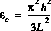

Various mechanical and electrical test and measurement structures are available in the Parameterized Micromechanical Element library and are described in this chapter. Where appropriate, there are versions of the element implemented on each of the structural layers. All geometrical length parameters passed to the generators must be in µm units. Test structres such as the Guckel rings and Euler columns can be used to estimate the residual stress in the structural layers.
The following test and electrical elements are currently available in the CaMEL PME library:
Some of the test structure elements include mechanical models of the structures within them in order to allow mechanical parameters as inputs to the element. It is also necessary to enter process dependent material properties and layer thicknesses in order to allow these mechanical models to be used.
The aptest PME element generates an area-perimeter test structure that can be used to test the dielectric properties of the isolation layer between the first electrical connect layer and the substrate. It can also be used to measure the resistance of the first electrical connect layer. Probe pads are include in the structure to allow electrical probing for measurements. An electrical connection to the conductive substrate is required for dielectric measurements. The origin of the cell is located at the lower left corner of the element. The following parameters are used:
width: width of electrical connect wire, µm height: serpentine height, µm length: serpentine half wavelength, µm nw: number of wavelengths, µm name: name of cell.
The element parameters can be selected to obtained the desired area
and perimeter for the structure.
This can be used to study the
effects of etching the electrical connect layer on the dielectric
properties of the isolation layer.
Element calling sequence:
PME aptest(double width, double height, double length, int nw,
char *name)
Figure 21. Area-perimeter dielectric isolation test structure used to measure the dielectric properties of the isolation layer. It can also be used to measure the resistance of the first electrical connect layer. The pads at the two ends of the structure can be used to probe the structure in a wafer testing station.
The cotest PME element generates a crossover test structure that can be used to test electrical interconnection using bridges on structural layers 1 and 2 to cross over lines on the first electrical interconnect layer. The wires are anchored to the substrate except at the bridges. The origin of the cell is located at the lower left corner of the element. The following parameters are used:
p0width: width of wire on first electrical connect layer, µm p1width: width of wire on first structural layer, µm p2width: width of wire on second structural layer, µm name: name of cell.
Element calling sequence:
PME cotest(double p0width, double p1width, double p2width,
char *name)
Figure 22. Crossover test element cotest. The cross-hairs indicate the local origin of the cell. Pads are added to the wires to allow electrical probing of the test structures.
The coatst PME element generates a crossover test structure that can be used to test electrical interconnection using bridges on structural layers 2 to cross over lines on structural layer 1. The wire on structural layer 2 is anchored to the substrate everywhere except at the bridges. The origin of the cell is located at the lower left corner of the element. The following parameters are used:
p1width: width of wire on first structural layer, µm p2width: width of wire on second structural layer, µm name: name of cell.
Element calling sequence;
PME cotest(double p1width, double p2width, char *name)
Figure 23. Crossover test element coatst. The cross-hairs indicate the local origin of the cell. Pads are added to the wires to allow electrical probing of the test structures. In this case a horizontal wire on structural layer 2 crosses over the anchored, vertical wire on structural layer 1.
The dsbeam1 and dsbeam2 PME elements generate doubly supported beam test structures. This element can be used to estimate the residual strain in a film with a compressive residual strain. Generally, an array of beams with varying lengths are used to determine the critical buckling length for the residual strain in the structural layer of interest. Hence, the name, Euler columns, for these test structures. The origin of the cell is located at the center of the beam. The following parameters are used:
blength: length of doubly supported beam, µm bwidth: width of doubly supported beam, µm asize: size of anchor supports, µm name: name of cell.
The beam parameters are chosen to set the critical buckling strain of the beam and hence the residual compressive strain that it would detect. If the thickness of the structural layer used is larger than the width of the beam, lateral buckling will occur; i.e., buckling in the plane of the wafer. Otherwise, buckling will occur out of the plane of the wafer.
Element calling sequence:
PME dsbeam1(double blength, double bwidth, double asize, char *name) PME dsbeam2(double blength, double bwidth, double asize, char *name)
Figure 24. Doubly supported beam element generated by dsbeam1 or dsbeam2. The critical compressive residual strain value at which the beam will buckle upon release is determined by the beam length, blength, and the smaller cross-sectional dimension of the beam.
The dsbeams1 and dsbeams2 PME elements generate sets of doubly supported beam test structures on structural layer 1 and structural layer 2, respectively. This element can be used to estimate the residual strain in a film with a compressive residual strain (1). The origin of the cell is located at the left end of the set of beams. The following parameters are used:
e0min: minimum residual strain e0max: maximum residual strain dele0: residual strain step size bwidth: width of doubly supported beam, µm height: thickness of structural layer of the beam, µm asize: size of anchor supports, µm name: name of cell.
The element uses the residual strain range and step size specified to determine the beam lengths of the array of doubly supported beams. The lengths are chosen such that the critical strain that the beams can support before buckling corresponds to the desired value of residual strain to be detected. For beams clamped at both ends, the Euler buckling criterion for the compressive strain in the film

is used, where L is the length, and h the height of the beam (the minimum of bwidth and height parameters specified). The anchored ends of the beam are considered ideal clamped ends and the elasticity of the supports is not modelled. The beam parameters are chosen to set the critical buckling strain of the beam and hence the residual compressive strain that it would detect. If the thickness of the structural layer used is larger than the width of the beam, lateral buckling will occur; i.e., buckling in the plane of the wafer. Otherwise, buckling will occur out of the plane of the wafer.
Element calling sequence;
PME dsbeams1(double e0min, double e0max, double dele0, double bwidth,
double height, double asize, char *name)
PME dsbeams2(double e0min, double e0max, double dele0, double bwidth,
double height, double asize, char *name)
Figure 25. Array of doubly supported beams with specified critical strains generated by the dsbeams1 or dsbeams2 element.
The gring1 and gring2 elements generate a single "Guckel" ring test structure on structural layer 1 and structural layer 2, respectively. These ring structures can be used to estimate the residual strain in a film with tensile residual strain. An array of rings with different radii are used to estimate the critical radius at which buckling occurs in the cross beam of the test structure and hence infer the tensile residual stress present in the structural film. The origin of the element is located at the center of the ring. The following parameters are used:
radius: mean radius of ring, µm bring: width of ring, µm bbeam: width of cross beam, µm asize: size of anchor supports, µm name: name of cell.
The ring parameters are chosen to set the critical buckling strain of the cross beam and hence the residual tensile strain that it would detect. If the thickness of the structural layer used is larger than the width of the cross beam, lateral buckling will occur; i.e., buckling in the plane of the wafer. Otherwise, buckling will occur out of the plane of the wafer.
Element calling sequence:
PME gring1(double radius, double bring, double bbeam, double asize,
char *name)
PME gring2(double radius, double bring, double bbeam, double asize,
char *name)
Figure 26. Guckel ring test structure element used for estimating residual strain in tensile films.
The grings1 and grings2 elements generate an array of "Guckel" ring test structures on structural layer 1 and structural layer 2, respectively. These ring structures can be used to estimate the residual strain in a film with tensile residual strain(2). The origin of the element is located at the left extreme of the of the element. The following parameters are used:
e0min: minimum residual strain e0max: maximum residual strain dele0: residual strain step size bring: width of ring, µm bbeam: width of cross beam, µm asize: size of anchor supports, µm height: thickness of structural layer, µm nu: Poisson's ratio for structural film name: name of cell.
The ring parameters are calculated for the critical strain values desired using a mechanical model of the test structure 1 . If the thickness of the structural layer used is larger than the width of the cross beam, lateral buckling will occur; i.e., buckling in the plane of the wafer. Otherwise, buckling will occur out of the plane of the wafer.
Element calling sequence:
PME grings1(double e0min, double e0max, double dele0, double bring,
double bbeam, double asize, double height, double nu,
char *name)
PME grings2(double e0min, double e0max, double dele0, double bring,
double bbeam, double asize, double height, double nu,
char *name)
Figure 27. Array of Guckel ring test structures used for estimating the residual stress in a tensile film.
The pad element generates a pad for wafer probe or wire bond purposes. It has a stack of layers electrically connecting the first electrical connect layer, first structural layer, second structural layer, and the second (and final) electrical connect layer. The origin of the element is located at the center of the pad. The parameters passed to the element are:
padw: pad width, µm name: name of pad cell.
Element calling sequence:
PME pad(double padw, char *name)
Figure 28. Pad element layout and cross-section.
{kind=link}
{kind=link}
{kind=link}
{kind=link}
{kind=link}
{kind=link}
{kind=link}
{kind=link}
{kind=link}